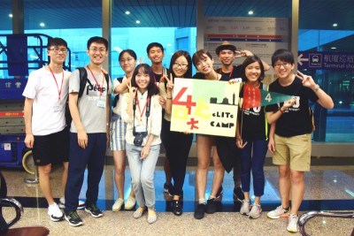

臺灣行程紀錄

7/10
七
月十日，是我們初次相遇的日子。在出境大廳裡，台大同學們舉著手做的接機板，引頸期盼北大同學們的到來。漫長的等待裡有著各種猜測和不安，而更多的，是即將結交新朋友的喜悅與興奮。「他們好像出來了！」、「是不是那群人啊？」、「他們在那裡！」等待的過程中，不時可以聽見大家驚喜的呼喊，但因著班機的延誤，大家的期待一次次落空，也漸漸的感到有些疲憊。
然而，在見到北大同學們步出出境口的那刻，台大同學們瞬間一掃疲態，興奮的搖動著手上的接機板，以最燦爛的笑容迎接眼前這群初見的小夥伴們。在前往乘車的短短路程裡，台大同學們為化解初見的些許尷尬，不停熱情的向遠道而來的北大同學們寒暄問候。在聽聞多數北大同學們都是初次來到台灣時，大家內心油然而生一股使命感，希望能在這短短的七天裡，讓北大同學們好好認識台灣，帶給他們滿滿的回憶與感動，對台灣留下美好的印象。

在前往餐廳的車上，我們進行了簡單的自我介紹，雖然彼此還不熟悉，但北大同學們的落落大方和台大同學們的熱情洋溢，使車上的氛圍格外熱絡，彼此心中的各種憂慮和忐忑也一掃而空，不禁對於未來幾天的相處充滿了期待。
在京華城，我們享用了狀元營的第一餐，除了豐富的菜色使飢腸轆轆的大家眼睛為之一亮，最大的重頭戲是台大同學們精心準備的歡迎晚宴，除了充滿中國風的扇子及傘舞表演，還有精彩的band演出，以及充滿趣味的小組介紹短片。而更少不了的，是師長們的叮嚀與囑咐。老師們一再叮囑著大家要珍惜狀元營這難得的機會，把握時間好好認識和了解身邊的小夥伴們。最後，我們一起學唱了營歌—「好好」。當時，我們怎麼也不知道，營期的最終，這首歌成為了我們深厚牽絆的寫照，記錄著我們得來不易的友誼。
7/11

這
天，在享用完飯店豐盛的自助式早餐後，我們驅車前往台北頗負盛名的觀光景點—國立故宮博物院。在故宮博物院，我們一覽孔子與其弟子傳神的肖像畫和他們流傳千古的儒家典籍;親眼見證聲名遠播的肉形石與翠玉白菜的鬼斧神工;一睹先秦銅器與神器的精巧，更了解先古器物形象的背後意義，專注而享受的浸淫於歷史的長流之中。
而專業導覽之後，是各小組的自由活動時間，在特色紀念品部，可以看見許多用心挑選紀念品的北大、台大的同學。尤其，台大的同學們各個絞盡腦汁，希望能從五花八門，又各具特色的禮品中，挑選出最能聊表心意、具台灣風情並且實用的小禮物送給自己的小主人。而在明信片區，也可以看見北大同學們用心書寫明信片，希望記錄下在台灣的美好回憶，和珍視的好友亦或是家人分享這份喜悅。
故宮遊覽後的行程，可說是此次狀元營的重頭戲。也就是北大、台大同學們相互學習與交流的學術活動—管理名著分享會。
台大第一組和大家分享近年話題性十足的貝佐斯傳記—「什麼都能賣—貝佐斯如何締造亞馬遜傳奇」，他們著重於分析貝佐斯與眾不同的領袖特質以及亞馬遜倉儲系統針對市場需求的演進與開發。而北大第一組透過謝林的「衝突的戰略」，介紹其中重要思想理論—可信承諾，亦藉炸橋理論與戀愛恐嚇等鮮活例子佐證他們的報告主題「博弈，無所不在」。
台大第二組有鑒於台大北大兩校皆致力推動學生在創新創業領域的發展，選擇了「zero to one 」一書，探討企業如何創造價值，並指出創業者應避免競爭，致力開拓新市場。而他們更以特斯拉、side-car 等企業統整分析創業成功亦或失敗的契機。而北大第二組從「孫子兵法與管理學」中，彙整出了孫子兵法中，隱含的管理之道。
台大第三組選擇的是「創意電力公司」，此書多由大眾耳熟能詳的事例為切入點，指出成功的決策背後常是荒謬的提案，但透過一再地修改，便能更臻完美。而此組更從中體悟出管理的核心價值就是能發現並且解決問題。北大第三組介紹的書籍是「藍血十傑」，在福特公司的興衰過程中，十傑雖是轉型的勝利者，也因最終不再轉型而走向悲劇。因此，他們認為「只有不斷的轉型才是企業的生存之道」，以人為本是不變的道理，唯有兼具數字化與人性化的管理，才能在永無止盡的商戰中，獲得勝利。
台大第四組和大家分享了「管理相對論」一書，此書藉由成功ceo的訪談紀錄，剖析管理的五大面向。而四小特別針對領導、組織、創新的三個領域進行報告，分析管理者在此三面向應採取的對策及正確態度。北大第四組透過彼得杜拉克的經典名著—The Effective Executive，分享高效能管理的精髓所在，以及多數人在管理企業亦或是個人時間時常犯的錯誤。而他們亦不忘轉換視角，回歸中國的企業管理層面，針對不足之處提出改善方針。
台大第六組藉「穀倉效應」一書，探究何為人們常忽略一些明顯的風險或機會而做出看似愚蠢的抉擇 ，而他們亦舉出瑞銀集團因分工不當而深陷金融危機的事件作為生活中深受穀倉效應之害例子。北大第六組透過創新的戲劇手法，介紹了「concept of the corporation 」一書，對比截然不同的管理理論，探討如何讓組織更有效的運作，並分享彼得杜拉克的理論，認為管理人應善盡訓練職員的職責，以促進企業效益。
讀書分享會結束後，大家便抓緊時間趕回飯店，換上體面的西裝和優雅的小禮服，仔細梳妝打扮一番，為這天晚上盛大的宴會做準備。當大家步上遊覽車，看見身邊的小夥伴們和平時截然不同的裝扮時，都感到格外新奇與興奮。
大約十來分鐘的車程，我們抵達了晚宴場所—國賓飯店，在貴賓抵達前，我們進行了多次動線排練，希望能夠使晚宴進行更加順利，也以此表示我們對於師長們的敬重與感謝。終於，在兩位司儀的主持下，晚宴開始了。首先，司儀一一介紹這十六年間支持、推動著狀元營舉辦的師長們，以及與會嘉賓。接者，便是貴賓們的致詞時間。
曾多度參與狀元營晚宴的王金平院長在演說中不時勉勵兩岸學生努力學習、持續進修。不止要培養對於公共事務的國際視野，更要擁有一顆關懷本地的初心。此外，對於優異青年培育不遺餘力的王院長亦感謝在座師長對於菁英培育之貢獻，尤其感謝冒大衛書記致力兩岸學術融冰與交流。最後，期許狀元營能夠持續舉辦，促進兩岸互動，以及未來領導菁英之培育。
台大張心瑞代理校長在演說中提及台大與北大歷史淵源，指出兩校曾有共同的大家長—傅斯年校長，具有密不可分的文化背景。此外，近年兩校交流密切，與亞洲頂尖五校一齊發起松聯盟組成，想必未來將能攜手向華人地區卓越大學邁進。
光華管理學院劉俏院長在致詞之始便言到：「一件事若能做十六年，必定是個傳奇。」，對狀元營的優良傳承表達高度肯定與讚賞，更對兩校持續的交流表示感謝，期許兩校、甚至是兩岸能保持溝通交流，共同創造美好榮景。
台大工商管理學系郭瑞祥教授認為，人才的教育對區域發展非常重要，在驚奇的經驗中，不只要有情感交流，更要有整合性思考，彼此觀摩學習、建立連結。若能化人脈為知識的力量，未來必能一同創造價值，縮短距離、維持情緣，創造前進的契機。最後，郭教授更贈送狀元營全體一首自提的詩：「台大北大行，狀元心連心；四海皆兄弟，兩岸一家親。」以此作為對台大北大師生最誠摯的祝福。
7/12
十
二號的清早，夏日熾熱的火球雖已高掛於天際，大家仍沉醉於酣甜的夢境之中，一聲蕩然於房間的電話聲，劃破了沉默的氛圍，大家便紛紛在睡眼惺忪中緩緩睜開雙眼，繼續為接踵而至的旅程準備，並且鋪張出屬於六十位兩岸青年的共同樂章。在喧囂的車水馬龍中，我們抵達了臺北轉運站，並乘著如脫韁野馬般奔馳的高鐵穿梭至高雄，穿過群山環繞的臺北時，映入眼簾的便是綠意盎然的稻田，飽滿的稻穗正向我們招手，彷彿暗示著一段精彩的旅程正在生機蓬勃中醞釀著。
抵達高雄後，在正午烈陽的陪伴下，我們抵達了高雄地標-85大樓用餐。在三十九樓的自助餐餐廳中，我們度過了令人難以忘懷的午餐之旅。除了美食佳餚外，落地窗外的碧海來天，更是深深吸引著我們的目光，清澈湛藍的海水波光粼粼，藍天也在些許白雲得妝點下多了幾分雅致，讓我們除了擁有味覺的享受外，視覺的味蕾也在這一片景致中飽餐了一頓。美好的時光總是在須臾之間穿梭，奢華的午餐時光也將終了。從三十九樓的天際間回到地表，我們繼續趕路，前往了鐵道博物館。
在鐵道博物館中，我們體驗了鐵道從古至今的歲月，陳列已久的倉庫雖看似歷經千百年的滄桑，卻依然屹立於眼前，在歷史的洪流中，仍不曾憾動過其堅實的外表，使其更顯有歷史韻味。此外，倉庫上的彩繪壁畫附有濃濃的鐵道色彩，大家便紛紛上前與此堵牆合影留念，因為牆上佈滿了各種有趣的圖畫，大家便各自發會自己的想像力，擺出千奇百怪的姿勢，讓每一張照片中都有著年以一語道盡的有趣故事。
結束參訪後，大家便驅車前往墾丁，在漫長了路程中，臺灣海峽的明媚風光映入眼簾，此時已是午後四時了，太陽在西方的高空中閃爍，清澈的海水在眼前更顯其湛藍，宛若眾多的藍寶石在眼前舞動，椰子樹慵懶地矗立於白色的沙灣上，少了嘈雜喧囂的都市匆忙，沙灘、碧海與藍天讓人真有股恣意悠悠之情。傍晚的墾丁依然充滿樂趣，夕陽已見沒入海洋盡頭，大夥們在海灘上任意地奔跑，海水也在此時加入了嬉戲，許多的同學被丟入冰涼的海水中，身上雖佈滿泥沙，卻帶走了堆積已久的暑氣，每個人無不笑容滿面，大家便在這歡愉的氣氛中度過了難以忘懷的傍晚。
夜晚的墾丁依然精彩，夜市中的小吃店琳瑯滿目，各種佳餚美食全部聚集於此地，香氣陣陣撲鼻而來，嗅覺彷彿又再次從深沉的睡眠中喚醒，提醒著我們每個人對美食的渴望，因此，我們便在這片美食大海中捕食，招牌的鹽酥雞、著名的雪花牛、清涼的冷飲，每一樣美食都給予了我們天上人間的感受，早已飢腸轆轆的我們彷彿久旱逢甘霖，緩解了腸胃空腹已久的怨懟。
飽餐後已是夜深了，大家來到了夜晚的海灘，進行一場激烈的躲避球競賽，大夥們在沙灘上盡情地投入於遊戲之中，熱情的汗水也一滴一滴地留下，比賽的勝負早已被忘卻，大家臉上都掛著最純真的笑容。最後，大家便在沙灘上點燃手中的仙女棒，隨著火花在夜空中璀璨的綻放，大家便在這最美的時刻許下心中的願望，讓第三天的樂章在圓滿中畫下了休止符。
7/13
時
間很快地來到了第四天。我們起了個大早，為台灣行程中最具挑戰性的一項做準備。沒錯，就是名聞遐邇的「阿朗壹古道」！我們把背包中所剩不多的空間塞滿了礦泉水，戴上帽子、圍上運動頭巾、撐起抵抗強烈陽光的傘，在當地原住民導遊的帶領下，開始了這趟征服阿朗壹古道的挑戰！穿梭在山中小徑，我們拍照，生怕錯失壯麗的自然美景；踏過了岸邊岩石，我們談笑，渴望知道更多彼此的想法。當看到終點矗立的碑石時，我們拍著身旁夥伴的肩，相視而笑。回到出發點時，那杯沁涼的山粉圓冬瓜茶，更將長途跋涉的疲勞感一掃而空。回憶也正如同那冬瓜茶般，甜而不膩。
而晚上在日暉度假村的日暉晚宴，則又是行程中另一個重頭戲了。在這場台灣行最大的晚宴中，我們看見了許多臺大同學精心籌備已久的表演，從張創動人的阿美族樂曲、令人捧腹的搞笑劇、維辰美妙的琵琶演奏、乃中令人驚嘆的魔術到兩支帥舞、翊如精彩的跳繩表演、信穎深情的吉他，都令我們看得目不轉睛、拍手叫好。最後，我們一起以大蛋糕慶祝了狀元營的第十六個生日。遙想過去十五屆的狀元營，再看著身旁的夥伴，心頭突然湧現了強烈的歸屬感⋯⋯。
7/14
ㄧ
早，我們騎著腳踏車向伯朗大道和金城武樹出發。天氣十分晴朗，天空蔚藍澄澈無雲，雖然艷陽高照，路旁也沒有甚麼遮蔽物，但身旁有徐徐的微風吹來，因此並不覺得炎熱。因為過了稻子採收的時節，路旁的田地一片枯黃，很遺憾看不見廣告中綠草豐潤的景色，但遠方的山景和山邊瀰漫的雲霧很好的填補了這一個缺點，遠遠看去依舊是一幅美麗的風景。在稻田間緩緩騎著腳踏車，偶爾停下來拍張照片或欣賞風景，沒有洶湧的人潮和車輛，別有一股悠閒之感。而不得不說的是，這裡真的是一個非常適合拍照的地方，不論是到了金城武樹還是伯朗大道，大家拉著朋友或者組內的同伴，站在鏡頭前擺出姿勢，有了自然風光當背景，不須打光或修圖，隨手一拍就是好照片。
午餐享用客家美食，品嘗台東有名的香米和洛神花並獲得一個陶碗和竹製餐具之後，我們經過南迴公路到了花蓮的馬太鞍部落，聽著風趣的阿美族導覽講解部落文化以及巴拉告生態捕魚的方法：先用一段段的水管當下層，讓鰻魚等沒有鱗片的魚住進去；中層再用樹枝當作蝦蟹藏匿之處；最後上面長出水草吸引有鱗片的魚群，上層魚群的食物碎屑和排泄物可以成為下層魚蝦的食物。
講解完，我們親自到河邊捕魚，用網子來回巡了幾次，捕捉到好幾條大魚，將魚肉切片再投入燒紅的石塊，石板煮魚就完成了，不用加太多的調味，滋味依然鮮美。此外，還嘗試了將米飯搗成麻糬，看著同伴一個個奮力揮動杵搗麻糬的模樣，旁邊的人也會一起加油，剛搗好的麻糬裹上花生粉，吃進嘴裡，簡單的點心因為包含大家的努力而更加美味。
晚餐時除了吃飯之外，各組還玩起遊戲進行各種大冒險，有表演唱歌跳舞的、向別組同學說真心話的，還有神奇的水果仙子，讓晚餐時間變得更加熱鬧。飯後進行的大家來找碴更是讓每個人都卯足全力，一組努力找出不顯眼的地方改變擺設，例如將茶包翻面、移動飯店備品包的牙膏位置等，另一組則仔細檢查房間，記下原本的佈置，再找出改變的地方。在一整天的活動之後，大家仍然有精神參與遊戲，也許只要和你們在一起，就能充滿活力投入各式各樣的活動。
7/15
若
是提及臺灣美景，則太魯閣絕對會是不可被忽略的景點之一。這天，在飯店享用早點過後，我們搭車前往著名的太魯閣國家公園。遊覽車沿著陡峭的岩壁一路前行，尚未下車即能感受壯麗的景觀，斷崖、峭壁、峽谷無一處不令人震懾。自燕子口步道入口開始步行，走在步道上更近距離感受太魯閣的魅力，大自然鬼斧神工的雕塑著這雄偉的地形，先民一鑽一鑿篳路藍縷的開拓道路，加以往返的燕子，或在岩柱石壁間穿梭鳴唱，或在壁上洞穴中稍作歇息，每一幅景象的串聯，皆組成了太魯閣難以用簡短字句完整形容的美麗。太魯閣中的長春祠雖在整修，但遠處遙望飛泉瀑，仍可感受其壯闊，也懷想起所有開築道路的先民，期盼所有英勇捐軀的靈魂，在美景環繞下獲得寬慰。
中午，搭乘火車返回臺北，窗外是天氣晴朗的太平洋海岸線，窗內是心情晴朗但玩到累倒的可愛的人們。抵達臺北回飯店稍做整理後，前往臺北地標──臺北一〇一，因停留時間不足無法上至觀景台，雖稍嫌可惜，但各組均把握時間，去找尋尚未品嘗的台灣小吃，去購買心目中想要的商品，去鄰近的四四南村體驗網美氣息，時間不長卻實實在在地體驗了臺北人的日常。
晚上的惜別晚宴是今天的重頭戲，串場的幽默故事連貫，猴子Band兩位主唱的優美歌聲，天團的搞笑與帥氣，明佑吉他的動人旋律，加上惜別影片上一張張的照片，細數著這七天來的點點滴滴，從六十位陌生人到一段最堅定的友誼，回憶在瞬間化為永恆，期待著接下來的七日大陸行，會留下更多更多值得被紀念的相片。
7/16
在
台灣的最後一夜，我們都不急著闔眼。夜遊台大，吃著夜宵，抱著枕頭聊著天，偷偷寫著小天使的卡片，那晚的夜好長好長，長到希望時間就停在這一刻，就算知道四天後的我們還會再見面。
到了機場，一路陪著你們掛行李，揭曉小天使小主人，到最後的合照，就算有著一絲不捨，我們都依然笑著，笑得很燦爛，因為知道我們牽手走過的旅程還未結束，所以沒有哽咽沒有哭泣，只有暖心的擁抱，嘴裡說著等你。望著你們一個一個地揮手道別，背影轉身消失在入關處，才發現原來想念可以不需要長久時間的推疊，而是一瞬間發現自己已經習慣的人們不在身邊。
坐在回程的遊覽車上，聽著其他夥伴們討論著這七天以來的點點滴滴：狼人殺，uno，你畫我猜。啊嘿呦，你有毒吧，笑得像個八百斤的孩子。雖然那時你們不在，但我們討論的全是你們，相信那時在候機室的你們也是如此吧!從初次見面的羞澀到如今可以自在地互開玩笑，從一開始膽怯地摸索彼此的興趣到現在一眼就懂的默契，這七天我們一同走過的風景、一起逛的墾丁大街、一起爬的阿朗壹、一起在伯朗大道飆著單車看著雲、一起在馬太鞍赤著雙腳捕著魚。我想，或許七天很短，但已足夠讓我們記得彼此一輩子。
幸好，我們的故事還沒來到結局，站在旅途一半的中繼站，回首是你我一同編寫的精彩回憶，而瞻望的，是四天後和你們在北京、哈爾濱再一起相處的時光。那天，台北的夜晚一切都沒有不同，唯獨清澈的夜空下，有著六十個互相牽掛的夢。

{kind=link}
{kind=link}
{kind=link}
{kind=link}
{kind=link}